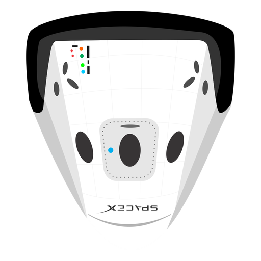

Hyperblog
Tu blog de cabecera
Este es el titulo atradctivo e interesante post
Y este es el páarrafo de inicio donde vamos a explicar las cosas increíbles que se pueden hacer con ramas

Los blogs son muy buenos
Suscribete y dale like por favor